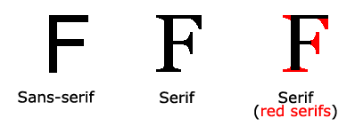

Font Selection is Important
சரியான எழுத்துருவைத் தேர்ந்தெடுப்பது வாசகர்கள் ஒரு வலைத்தளத்தை எவ்வாறு அனுபவிக்கிறார்கள் என்பதில் பெரிய தாக்கத்தை ஏற்படுத்துகிறது.
சரியான எழுத்துரு உங்கள் பிராண்டிற்கு வலுவான அடையாளத்தை உருவாக்கும்.
படிக்க எளிதான எழுத்துருவைத் தேர்ந்தெடுப்பது முக்கியமானது. உங்கள் எழுத்துருவிற்கு நல்ல நிறம் மற்றும் அளவைத் தேர்ந்தெடுப்பதும் முக்கியமானது.
The CSS font-family Property
CSS font-family பண்பு ஒரு உறுப்புக்கான எழுத்துருவை குறிப்பிடுகிறது.
உதவிக்குறிப்பு:
font-family பண்பு பல எழுத்துரு பெயர்களை "பின்வாங்கல்" அமைப்பாகக் கொண்டிருக்க வேண்டும். உலாவி முதல் எழுத்துருவை ஆதரிக்காவிட்டால், அது அடுத்த எழுத்துருவை முயற்சிக்கிறது. எழுத்துரு பெயர்கள் கமாவுடன் பிரிக்கப்பட வேண்டும்.
எப்போதும் நீங்கள் விரும்பும் எழுத்துருவுடன் தொடங்கவும், மற்றும் எப்போதும் பொதுவான குடும்பத்துடன் முடிக்கவும், மற்ற எழுத்துருக்கள் கிடைக்கவில்லை என்றால், உலாவி பொதுவான குடும்பத்தில் ஒத்த எழுத்துருவைத் தேர்ந்தெடுக்க அனுமதிக்கவும்.
குறிப்பு:
எழுத்துரு பெயர் ஒன்றுக்கு மேற்பட்ட வார்த்தைகளைக் கொண்டிருந்தால், அது மேற்கோள் குறிகளில் இருக்க வேண்டும், எடுத்துக்காட்டாக: "Times New Roman".
உதவிக்குறிப்பு:
CSS Web Safe Fonts-ல் பின்வாங்கல் எழுத்துருக்கள் பற்றி மேலும் படிக்கவும்.
எடுத்துக்காட்டு
மூன்று பத்திகளுக்கு சில வெவ்வேறு எழுத்துருக்களை குறிப்பிடவும்:
.p1 {
font-family: "Times New Roman", Times, serif;
}
.p2 {
font-family: Arial, Helvetica, sans-serif;
}
.p3 {
font-family: "Lucida Console", "Courier New", monospace;
}CSS Generic Font Families
CSS-ல், ஐந்து பொதுவான எழுத்துரு குடும்பங்கள் உள்ளன:
Serif fonts
ஒவ்வொரு எழுத்தின் விளிம்புகளிலும் ஒரு சிறிய பக்கவாதம் உள்ளது. அவை முறைப்படுத்தப்பட்ட மற்றும் நேர்த்தியான உணர்வை உருவாக்குகின்றன.
Sans-serif fonts
சுத்தமான கோடுகளைக் கொண்டுள்ளன (சிறிய பக்கவாதங்கள் இணைக்கப்படவில்லை). அவை நவீன மற்றும் குறைந்தபட்ச தோற்றத்தை உருவாக்குகின்றன.
Monospace fonts
இங்கு அனைத்து எழுத்துகளும் ஒரே நிலையான அகலத்தைக் கொண்டுள்ளன. அவை இயந்திர தோற்றத்தை உருவாக்குகின்றன.
Cursive fonts
மனித கையெழுத்தைப் போலவே இருக்கும்.
Fantasy fonts
அலங்கார/விளையாட்டு எழுத்துருக்கள்.
அனைத்து வெவ்வேறு எழுத்துரு பெயர்களும் பொதுவான எழுத்துரு குடும்பங்களில் ஒன்றுக்கு சொந்தமானவை.
Difference Between Serif and Sans-serif Fonts
Serif vs. Sans-serif

குறிப்பு:
கணினி திரைகளில், sans-serif எழுத்துருக்கள் serif எழுத்துருகளை விட படிக்க எளிதானவை என்று கருதப்படுகின்றன.
Some Font Examples
| Generic Font Family | Examples of Font Names |
|---|---|
| Serif | Times New Roman Georgia Garamond |
| Sans-serif | Arial Verdana Helvetica |
| Monospace | Courier New Lucida Console Monaco |
| Cursive | Brush Script MT Lucida Handwriting |
| Fantasy | Copperplate Papyrus |
CSS Fonts பயிற்சி
இந்த டுடோரியலில் உள்ள பல அத்தியாயங்கள் உங்கள் அறிவு நிலையைச் சரிபார்க்கக்கூடிய பயிற்சியுடன் முடிகின்றன.